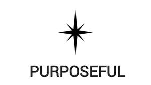
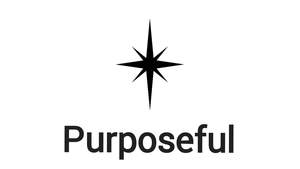

Trade Mark Journal No.2025/013 28 March 2025
UK00004135073 10 December 2024 (9,35)
Mark 1

Mark 2

- Class 9
- Software for creating, managing, displaying, searching and sharing business profiles, organisation profiles, individual profiles, professional profiles, volunteer profiles, social media profiles, job titles, curriculum vitae and references; software for creating, managing, displaying, searching and sharing online business profiles, organization profiles, individual profiles, professional profiles, volunteer profiles, social media profiles, job titles, curriculum vitae and references; software for creating and managing business profiles, organisation profiles, social media profiles, professional profiles, business networking profiles and volunteer profiles; computer, electronic, online databases and software for managing, recording and displaying job titles, curriculum vitae and references; software for recruitment and work placement purposes; computer, electronic, online databases for recruitment purposes; software for recording and displaying job titles, job vacancies, voluntary positions and work placements; computer, electronic, online databases and software for managing job vacancies, voluntary positions and work placements; software for displaying and managing applications for job vacancies, voluntary positions and work placements; computer, electronic, online databases and software for displaying and managing applications for job vacancies, voluntary positions and work placements.
- Class 35
- Business administration and management; administration and management of organisations; organisation, management, administration and auditing of organisations, businesses, enterprises, governments, councils, authorities, institutions, charities and not-for-profit organisations; organisation, management, administration and auditing within organisations, businesses, enterprises, governments, councils, authorities, institutions, charities and not-for-profit organisations; administration and management of government, government services, government related organisations, non-government organisations, business, enterprise, not-for-profit organisations and charities; administration and management of enterprise, trade, business and law; business assistance, management and administrative services; business consultancy and advisory services; business management consultancy and advisory services; business management, organization and administration; business analysis, research and information services; conducting of auditing for business and financial purposes; business auditing; audits of business purposes and strategy; audits of business purposes, strategy and execution; provision of corporate, wellbeing, environmental, social and governance audits; conducting and communicating purposeful audits being corporate governance, wellbeing, environmental, financial and social responsibility audits; conducting and communicating organisation purpose audits being corporate governance, wellbeing, environmental, financial and social responsibility audits; conducting and communicating organisation purpose assessments being corporate governance, wellbeing, environmental, financial and social responsibility assessments; provision of audits, assessments, information and reviews of the work of individuals, organisations, institutions, charities, not for profit organisations, government, education and research establishments; providing, communicating, writing and displaying audits, assessments, information and reviews of the work of individuals, organisations, businesses, charities, institutions, government, education and research establishments; communication and display of assessments and reviews of the work of individuals, organisations, businesses, charities, not for profit organisations, institutions, government, education and research establishments; business advisory services; accountancy services; business consultancy services; business consultancy; business advisory, assurance and assessment services; compilation and provision of business or trade information; accountancy services; audit services; commercial trading and consumer information services; management consultancy services; business assistance, management and administrative services; retail services in relation to clothing and headgear; online retailing services in relation to clothing and headgear; retail services in relation to clothing, headgear, sportswear and sportsgear; online retail services in relation to clothing, headgear, sportswear and sportsgear; promotion of goods and services through sponsorship; advertising, marketing and promotional services; advertising; marketing; promotional services; advertising, marketing and promotional of consultancy, advisory, assistance, assessment and auditor services; recruitment, organisation and administration of advisors, accountants, auditors, assessors and consultants; human resources management; human resources, leadership and people management; human resources consultancy; human resources consultation; human resources management and recruitment services; personnel resources management; administration, management, promotion and display of organisational structures, roles, job titles, job descriptions and personal profiles; online promotion and display of organisational structures, roles, job titles, job descriptions, personal profiles; online promotion and display of job profiles and personal profiles; consultancy regarding business organisation and business economics; development of concepts for business economy; economic forecasting; economic studies for business purposes; marketing and advertising of advisory, accountancy, consultancy and auditor roles; marketing and advertising of advisory, assessors, accountancy, consultancy and auditor jobs; marketing, promotion and advertising of advisory, assessors, accountancy, consultancy and auditor services; marketing, promotion and advertising of companies providing advisory, accountancy, consultancy, branding and audit services; online marketing and advertising of advisory, accountancy, consultancy and auditor roles; online marketing and advertising of advisory, accountancy, consultancy and auditor jobs; online marketing, promotion and advertising of advisory, assessors, accountancy, consultancy and auditor services; online marketing, promotion and advertising of companies providing advisory, accountancy, consultancy and audit services; marketing, promotion and advertising of advisors, assessors, accountants, auditors and consultants; online marketing, promotion and advertising of advisors, accountants, auditors and consultants; marketing of advisors, accountants, assessors, auditors and consultants; promotion, marketing and display of career profiles of advisors, assessors, accountants, auditors and consultants; online promotion, marketing and display of career profiles of advisors, assessors, accountants, auditors and consultants; providing information relating to employment; providing employment references; providing employment information via curriculum vitae and references; advertising of advisory, accountancy, auditory and consultancy services and organisations; marketing of advisory, accountancy, auditory and consultancy services and organisations; administration of recognition and rewards systems; development of guidelines, policies and best practices for accountants and auditors; advertising of others; online advertising of others; digital and online advertising services; promotion services; provision of commercial information; provision of commercial information from online databases; provision of commercial information and organisational reviews; market research studies; marketing research; marketing research and analysis; marketing research or analysis; market research and marketing studies; market research and analysis; research (business -); business research and surveys; market research; research (market -); administration and management of stakeholder consultations; administration and management of customer consultations; administration and management of employee consultations; administration and management of supplier consultations; administration and management of local community consultations; administration and management of consultations with groups representing individuals, communities, civic society, future generations, nature and the environment; public consultations; public opinion polling; public opinion surveys; public relations, marketing and advertising; providing ratings to support public decision making, public relations, marketing and advertising; providing rankings to support public decision making, public relations, marketing and advertising; providing user reviews for commercial or advertising purposes; provision of information and advice to consumers regarding the selection of products, services and organisations; publicity and advertising; referral marketing; publicity publication services; publicity services; texts (writing of publicity -); writing of publicity texts; consultancy services relating to advertising, publicity and marketing; advertising and publicity services; advertising, promotional and marketing services; advertising and marketing services provided by means of blogging; advertising and marketing services provided by means of social media; promotion [advertising] of business; promotional and advertising services; promotional marketing; influencer marketing; providing consumer product recommendations; appraisals (business -); business advice, inquiries or information; business appraisals and evaluations in business matters; business reports (writing of -); expert evaluations and reports relating to business matters; information and expert opinions relating to companies and business; preparation and compilation of business and commercial reports and information; preparation of expert evaluations and reports relating to business matters; completing and communicating organisational reviews, institutional reviews, economic reviews and establishment reviews; commercial information and advice for consumers in the choice of products and services; commercial information research studies; evaluations relating to commercial matters; information and expert opinions relating to companies and business; information and expert opinions relating to the work of individuals, companies, organisations, government and institutions; corporate management assistance; advisory services relating to the corporate structure of businesses; branding management, brand creation and brand management services; advertising services to create corporate and brand identity; brand positioning; brand evaluation services; all the above not related to the physical cleaning of items, clothing, buildings or people; information, advisory and consultancy services relating to all the aforesaid.
Good Turns Ltd